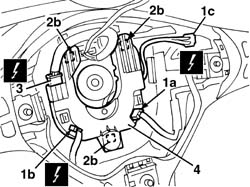

5570T68 strip contact on stalk unit for radio controls - r+r with steering wheel removed
- Path
- Procedures > 55 ELECTRICAL EQUIPMENT > 5570 ACCESSORIES > 5570T car radio and car telephone > 5570T68 strip contact on stalk unit for radio controls - r+r with steering wheel removed
- Kind
- repair procedure (removal / refitting; the operation number is the code)
- Applies to
- all engines; all production periods
- Interactive page
- https://sloeber94.github.io/elrnDB-a156/en/#/3238513
Applies to: all engines; production: da 03/02 a 09/03, da 10/03
 Removing
Removing
 Refitting
Refitting1. Disconnect electrical connections (1a), (1b), (1c).
2. Lift up the sliding contact (2a) slightly, releasing it from the retainers (2b).
3. Disconnect the electrical connection.
 | Name | Connector |
|---|---|---|
3 | Clock spring coupling |
4. Keep the sliding contact.

Applies to: all engines; production: da 03/02 a 09/03, da 10/03
Refitting
RemovingCheck that the sliding contact is not damaged.
Connect the electrical connection and place the sliding contact in position engaging the retainers.
Connect the electrical connections .
Check that the radio system and the controls on the steering wheel are working properly.